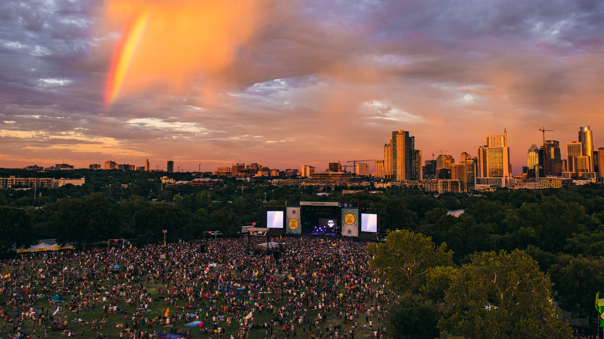

Welcome to the ACL Wayback Machine! Whether you are wishing to relive the magic of ACL 2010 or you couldn’t make it in 2013, this website is for you! Here, you can access the previous ACL lineups and watch videos of the performances. Create an account to view all of your favorited artists in one place. Check out the Bites & Booze tab for Austin’s hottest restaurants and bars. We hope you enjoy ACL all year long!
Image Source: https://www.austintexas.org/events/acl-fest/
Taking place at Zilker Park in Austin, TX, ACL Festival has grown to 2 weekends, 8 stages and over 130 bands.
ACL 2021 Coming Oct. 1-3 & 8-10, 2021!
Scroll to the Lineup of the year you would like to go to!